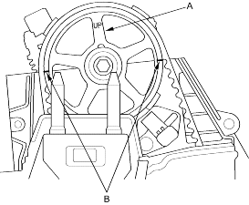
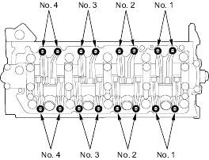
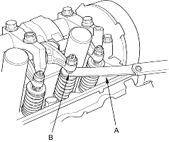

- Remove the ignition coil cover, then remove the four ignition coils (see page 4-25).
- Remove the throttle cable clamps and harness holder from the cylinder head cover (see step 9 on page 6-19).
- Remove the cylinder head cover (see step 10 on page 6-19).
- Remove the grommet from the upper cover and disconnect the TDC sensor connector. Remove the upper cover (see step 1 on page 6-57).
- Set the No. 1 piston at TDC. The ''UP'' mark (A) on the camshaft pulley should be at the top and the TDC marks (B) on the pulley should line up with the top edge of the head.

- Select the correct thickness feeler gauge for the valves you are going to check.
Intake: 0.18 - 0.22 mm (0.007 - 0.009 in.) Exhaust: 0.23 - 0.27 mm (0.009 - 0.011 in.)
Adjusting screw location:
INTAKE

EXHAUST
- Insert the feeler gauge (A) between the adjusting screw (B) and the end of the valve stem and slide it back and forth; you should feel a slight amount of drag.
